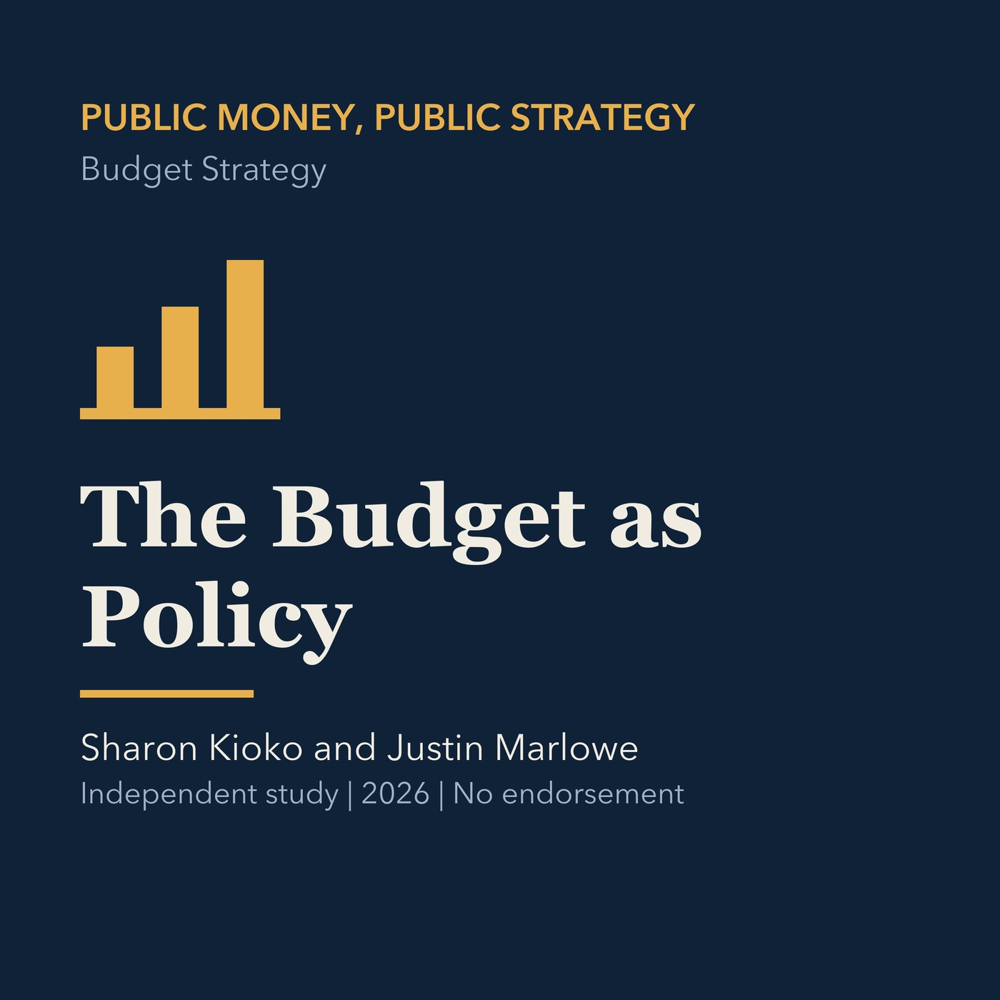

EPISODE 08
The Budget as Policy
Treats the budget as a prospective policy document linking priorities, resources, and authority.

- Stable GUID
3b8f3801-256f-57e3-ac76-e16300a8bbc0- Release
- financial-strategy-public-managers-v2026.3
- SHA-256
ab1a490c6d8fd5678bce3cd6d5594ba15bca0a314d3aae3af360d5833ad0a3df